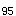

A.是可以避免的药物反应
B.是较严重的药物反应
C.常见于过敏体质患者
D.与药物作用选择性低有关
E.是药物剂量过大所致的反应
参考答案：D
题目解析：副作用是由于药物的选择性低，作用广泛，治疗剂量时就会出现的，与治疗目的无关的难以避免的不良反应。
A.与受体有亲和力，有内在活性
B.与受体有亲和力，无内在活性
C.与受体无亲和力，有内在活性
D.与受体有亲和力，有弱的内在活性
E.与受体有弱亲和力，有强的内在活性
参考答案：B
A.引起50%动物死亡的剂量
B.引起50%动物中毒的剂量
C.引起50%动物产生阳性反应的剂量
D.和50%受体结合的剂量
E.达到50%有效血药浓度的剂量
参考答案：C
A.最小有效量
B.极量
C.半数致死量
D.半数有效量
E.治疗指数
参考答案：E
A.药物本身固有的
B.较严重的药物不良反应
C.剂量过大时产生的不良反应
D.药物作用选择性
E.与药物治疗目的有关的效应
参考答案：A
A.ED/TD的比值
B.LD/ED的比值
C.LD/ED的比值
D.ED/LD的比值
E.TD/ED的比值
题目解析：治疗指数为半数致死量和半数有效量的比值，即LD/ED，常用来表示药物的安全范围。故选C。
A.治疗剂量时所产生的药物反应
B.与治疗目的有关的药物反应
C.不太严重的药物反应
D.药物作用选择性低时所产生的反应
E.一种难以避免的药物反应
题目解析：药物副作用是正常用法、用量时发生的与治疗目的无关的不良作用，药物副作用一般较轻微，A、C、E陈述正确，不符合题意。另外，副作用是由于药理效应选择性低，涉及多个效应器官，故D陈述正确，同样不符合题意，故选B。
A.在剂量过大或药物在体内蓄积过多时发生的不良反应
B.停药后血药浓度已降至阈浓度以下时残存的药理效应
C.突然停药后原有疾病加剧
D.反应性质与药物原有效应无关，用药理性拮抗药解救无效
E.一类先天遗传异常所致的反应
微信关注